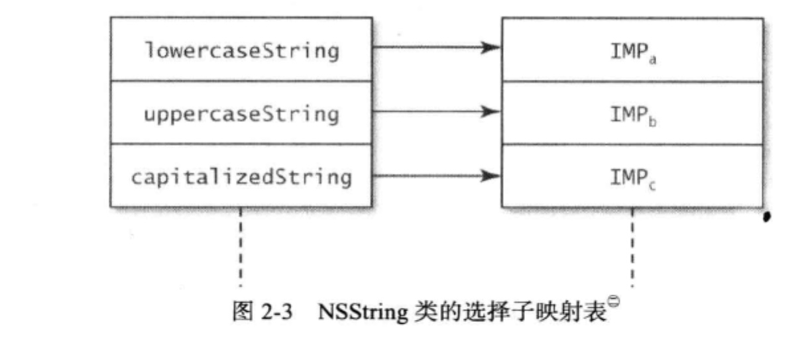
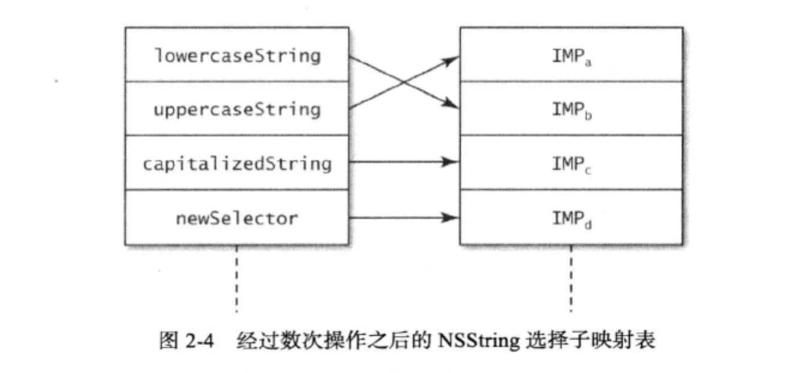
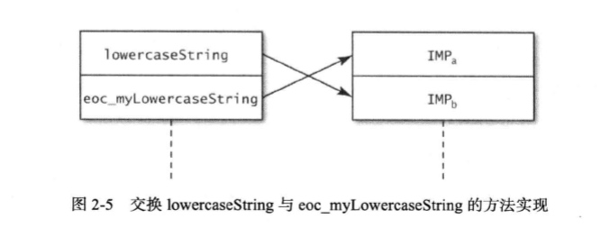

因为OC可以在运行期解析 一个对象究竟调用何种方法,所以我们也可以在运行期改变相对应的方法.
因为与给定的选择子名称相对应的方法也可以在运行期改变.所以若能善用此特性，则可发挥出巨大优势，因为我们既不需要源代码，也不需要通过继承子类来覆写方法就能改变这个类本身的功能。这样一来，新功能将在本类的所有实例中生效，而不是仅限于覆写了相关方法的那些子类实例。此方案经常称为“方法调配”（method swizzling) e
类的方法列表会把选择子的名称映射到相关的方法实现之上，使得“动态消息派发系统” 能够据此找到应该调用的方法。这些方法均以函数指针的形式来表示，这种指针叫做IMP, 其原型如下：
id (*IMP)(id, SEL ,...)
我们用NSString类来举例,下图表示lowercaseString、uppercaseString、capitalizedString方法映射到了不同的IMP上.

OC运行期系统,提供有方法来操作这个映射表.我们可以向这个表中,新增选择子,改变选择子所对应的方法实现,交换两个选择子所映射的指针.类似下图:

新表中,多了一个newSelector选择子,并且其他方法的实现也互换了.上述修改均无须编写子类，只是修改了“方法表”的布局.
下面我们来讨论如何互换两个方法的实现:
想要互换两个方法的实现可以,有下列函数:
//互换m1和m2的实现
void method_exchangeImplementations(Method m1, Method m2)
m1和m2的方法实现可以通过下面方法实现:
Method class_getInstanceMethod(Class aClass, SEL aSelector)
此函数根据给定的选择从类中取出与之相关的方法。
下面我们完整的举一个例子,来演示交换前面提到的lowercaseString 与 uppercaseString方法实现:
Method originalMethod =
class_getInstanceMethod([NSStringclass],
@selector(lowercaseString));
Method swappedMethod =
class_getInstanceMethod([NSStringclass],
@selector(uppercaseString));
method_exchangeImplementations(originalMethod,swappedMethod);
从现在开始,如果在NSString实例上调用lowercaseString,那么执行的将是uppercaseString,反之亦然:
NSString *string = @"This iS tHe StRiNg";
NSString *lowercaseString = [string lowercaseString];
NSLog("lowercaseString = %@", lowercaseString);
// Output: lowercaseString = THIS IS THE STRING
NSString *uppercaseString - [string uppercaseString】；
NSLog (@"uppercaseString = %@", uppercaseString);
// Output: uppercaseString = this is the string
刚才向大家演示了如何交换两个方法实现，然而在实际应用中，像这样直接交换两 个方法实现的，意义并不大。因为lowercaseString与uppercaseString这两个方法已经各自实现得很好，没必要再交换了。但是，可以通过这一手段来为既有的方法实现增添新功能。比方说，想要在调用lowercaseString时记录某些信息，这时就可以通过交换方法实现来达成此目标。我们新编写一个方法，在此方法中实现所需的附加功能，并调用原有实现。
新方法可以添加至NSString的一个"分类(category)"中:
@interface NSString (EOCMyAdditions)
-(NSString*)eoc_myLowercaseString;
@end
上面的新方法将与原有的方法互换,如下图所示:

新方法的实现代码可以这样写:
0implementation NSString (EOCMyAdditions)
-(NSString*)eoc_myLowercaseString {
NSString *lowercase = [self eoc_myLowercaseString];
NSLog (@"%@ => %@", self, lowercase);
return lowercase;
)
@end
这段代码看上去好像会陷人递归调用的死循环，不过大家要记住，此方法是准备和 lowercaseString方法互换的。所以，在运行期，eoc_myLowercaseString选择子实际上对应于原有的lowercaseString方法实现。最后，通过下列代码来交换这两个方法实现：
Method originalMethod =
class_getInstanceMethod([NSString class],
@selector(lowercaseString)〉；
Method swappedMethod =
class_getInstanceMethod([NSString class]f
@selector(eoc_myLowercaseString));
method_exchangeImplementations(originalMethod , swappedMethod);
之后我们只要如下执行就会发现:
NSString *string = @"ThIs iS tHe StRiNg";
NSString *lowercaseString = [string lowercaseString];
//输出了下面这行
// Output: This iS tHe StRiNg => this is the string
通过此方案，开发者可以为那些“完全不知道其具体实现的"（completely opaque, “完全 不透明的”）黑盒方法增加日志记录功能，这非常有助于程序调试。然而，此做法只在调试程序时有用。很少有人在调试程序之外的场合用上述“方法调配技术”来永久改动某个类的功能。不能仅仅因为Objective-C语言里有这个特性就一定要用它。若是滥用，反而会令代码变得不易读懂且难于维护。
要点
在运行期，可以向类中新增或替换选择子所对应的方法实现。
使用另一份实现来替换原有的方法实现，这道工序叫做“方法调配”，开发者常用此技术向原有实现中添加新功能。
一般来说，只有调试程序的时候才需要在运行期修改方法实现，这种做法不宜滥用。